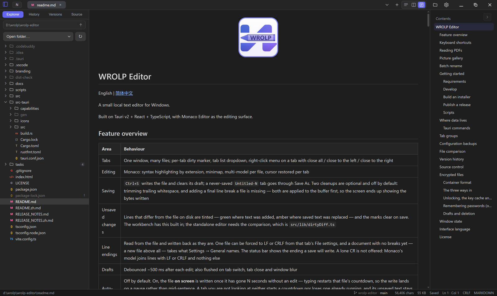

内置 Git 源码管理
侧栏第四个视图操作分组目录背后的真实仓库：暂存与未暂存改动、逐文件 diff、提交与历史、分支、三栏合并编辑器，以及 HTTPS / SSH 上的 fetch、pull、push，带进度与取消。
文档v0.0.3 · 2026-11-07 发布
一款 Windows 本地文本编辑器
Tauri v2 + React + TypeScript，编辑区用 Monaco Editor。多标签、草稿恢复、Markdown 预览、PDF 阅读、内置 Git 源码管理和 AES-256-GCM 加密，都在本机完成。

一个窗口里完成编辑、阅读、对比和提交。
侧栏第四个视图操作分组目录背后的真实仓库：暂存与未暂存改动、逐文件 diff、提交与历史、分支、三栏合并编辑器，以及 HTTPS / SSH 上的 fetch、pull、push，带进度与取消。
文档口令派生密钥的自描述容器。加密另存为、新建加密文件、改口令、移除加密，空闲自动锁定，可选把口令记住到 Windows 凭据管理器，草稿同钥加密。
文档打开后每次手动保存都记下文件当时的内容。任意两条可以并排比对，也可以拿任一版本与当前编辑区比对；只看变更、折叠未改动区段，或直接取回编辑器。
文档源码右侧渲染 GitHub 风格语法、目录与 Monaco 上色的代码块，mermaid / plantuml / graphviz 围栏画成 SVG。文档自带的 HTML 经白名单清洗后渲染，脚本与事件处理器一律不放行。
文档pdf.js 绘制，整篇连续滚动，25–400% 缩放。白纸、米黄、护眼绿、夜间反相或自选颜色；层级书签可逐支折叠，自动滚动按设定速度推进，按文件记住上次读到哪一页。
文档编辑后约 500ms 防抖落盘，切标签、关标签、窗口失焦时立即冲刷。与磁盘不一致的行会被染色：新增偏绿、改掉原有文字偏黄。自动保存落在一次停顿之后，而不是句子中间。
文档不需要账号，文件读写都在本机。
图片画廊只读本地目录 —— 不接图床、不上传、不生成直链。远程同步只发生在你主动执行 git fetch / pull / push 的时候，凭据放在 state/git.json，不进入设置也不进入配置备份。
应用数据目录
%APPDATA%\com.wrolp.editor
设置 → 关于 会列出完整路径，并能直接在资源管理器里打开。
在标签条上滚动滚轮可横向滚动。 完整行为见文档
Rust 后端做文件、git 与加密，Web 前端做界面。
一个 NSIS 安装包，装完即可从右键菜单或启动器打开文件。
从 GitHub Releases 取最新版的 x64 setup.exe。
需要 Windows 10/11 与 WebView2 运行时，近年的 Windows 已内置。
设置里可开启右键菜单集成；再次启动会把路径交给已运行的窗口。
启动后与每六小时会检查 GitHub 上的最新版本，发现新版只提示、不自动安装。安装由「下载并安装」触发：下载签名安装包后交给 passive 安装器并自动重启。自动检查可在 设置 → 关于 关闭。